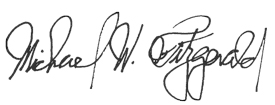

Case 2:22-cv-00051-MWF-JC Document 86 Filed 02/15/23 Page 1 of 6 Page ID #:1782
1
2
3
4
5
6
7
8
UNITED STATES DISTRICT COURT
9
CENTRAL DISTRICT OF CALIFORNIA
10
11 ACTIVISION PUBLISHING, INC., a
CASE NO. 2:22-cv-00051-MWF (JCx)
Delaware corporation,
12
ORDER GRANTING JOINT
Plaintiff,
STIPULATION FOR ENTRY OF
13
CONSENT JUDGMENT AND
v.
PERMANENT INJUNCTION
14
ENGINEOWNING UG, et al.,
15
Defendants.
Complaint Filed: 1/4/2022
16
Amended Complaint Filed: 9/16/2022
17
18
19
20
21
22
23
24
25
26
27
28
15167083.1
Case 2:22-cv-00051-MWF-JC Document 86 Filed 02/15/23 Page 2 of 6 Page ID #:1783
1
Pursuant to the Parties’ Stipulation dated February 13, 2023, the Court
2 hereby orders that judgment is entered against Defendant Manuel Santiago
3 (“Defendant”).
4
IT IS HEREBY FOUND, ORDERED, AND ADJUDGED as follows:
5
1.
Judgment shall be entered against Defendant in the amount of one
6 million dollars ($1,000,000), due and payable solely pursuant to the terms set forth
7 in the Parties’ Confidential Settlement Agreement and Release.
8
2.
Defendant, all persons acting under Defendant’s direction or control
9 (including but not limited to Defendant’s agents, representatives, and employees),
10 and those persons or companies in active concert or participation with Defendant
11 who receive actual notice of this Order by personal service or otherwise, shall
12 immediately and permanently cease and desist from any of the following:
13
(a)
taking any steps (directly or indirectly through third parties) to
14 develop, program, code, create, distribute, update, support, advertise, market, resell
15 or otherwise make available software designed to exploit or to enable members of
16 the public to exploit, cheat, manipulate, gain unfair advantages, violate End-User
17 License Agreements or Terms of Service, infringe intellectual property, or
18 circumvent technological measures with respect to (i) any of the Call of Duty series
19 of video games or (ii) any games owned, published, distributed or operated by
20 Activision or its parents, subsidiaries, or affiliates (including Blizzard
21 Entertainment, Inc.), including but not limited to Overwatch 2, World of Warcraft,
22 and Diablo (collectively, the “Activision Blizzard Games”). The software referred
23 to above is hereinafter referred to as the “Cheating Software.” The Cheating
24 Software shall include, but is not limited to the following software programs: (i)
25 “EngineOwning for Call of Duty: MW and Warzone Caldera (2019),” (ii)
26 “EngineOwning for Call of Duty: MW2 and Warzone 2.0 (2022),” (iii)
27 “EngineOwning for Call of Duty: Warzone Caldera Lite,” (iv) “EngineOwning for
28 Overwatch,” (v) “EngineOwning for Call of Duty: Vanguard,” (vi)
2
15167083.1
Case 2:22-cv-00051-MWF-JC Document 86 Filed 02/15/23 Page 3 of 6 Page ID #:1784
1 “EngineOwning for Call of Duty: Black Ops 3,” (vii) “EngineOwning for Call of
2 Duty: Black Ops 2,” (viii) “EngineOwning for Call of Duty: Black Ops,” (ix)
3 “EngineOwning for Call of Duty: WW2,” and (x) “EngineOwning for Call of
4 Duty: Modern Warfare 3.”
5
(b)
taking any steps (directly or indirectly through third parties) to
6 develop, program, code, create, distribute, update, support, advertise, market, resell
7 or otherwise make available software designed to spoof hardware IDs or computer
8 signatures for the purpose of avoiding, circumventing, or bypassing hardware bans
9 in connection with the Call of Duty series of video games or any games owned,
10 published, distributed or operated by Activision or its parents, subsidiaries, or
11 affiliates (including Blizzard Entertainment, Inc.), including but not limited to
12 Overwatch 2, World of Warcraft, and Diablo (the “Activision Blizzard Games”).
13 The software referred to in this paragraph shall hereinafter be referred to as the
14 “Spoofing Software,” and shall include, but is not limited to the software program
15 titled “EngineOwning Spoofer.”
16 (c)
promoting,
advertising,
encouraging or inducing others to
17 purchase or use (including via any social media account, website, or video-sharing
18 account) the Cheating Software, the Spoofing Software, or any other software
19 designed to exploit or enable the exploitation of the Activision Blizzard Games;
20
(d)
selling, reselling, or processing payments for the Cheating
21 Software, the Spoofing Software, or any other software designed to exploit or
22 enable the exploitation of the Activision Blizzard Games;
23
(e)
assisting in any way with the development of the Cheating
24 Software, the Spoofing Software, or any other software designed to exploit or
25 enable the exploitation of the Activision Blizzard Games;
26
(f)
sharing, copying, transferring, or distributing the Cheating
27 Software, the Spoofing Software, or any other software designed to exploit or
28 enable the exploitation of the Activision Blizzard Games;
3
15167083.1
Case 2:22-cv-00051-MWF-JC Document 86 Filed 02/15/23 Page 4 of 6 Page ID #:1785
1
(g)
publishing or distributing any source code or instructional
2 material for the creation of the Cheating Software, the Spoofing Software, or any
3 other software designed to exploit or enable the exploitation of the Activision
4 Blizzard Games;
5
(h)
operating, assisting or linking to any website designed to
6 provide information to assist others in accessing, developing or obtaining the
7 Cheating Software, the Spoofing Software, or any other software designed to
8 exploit or enable the exploitation of the Activision Blizzard Games;
9
(i)
investing or holding any financial interest in any enterprise
10 which Defendant knows or has reason to know is now, or intends in the future to
11 be, engaged in any of the foregoing activities prohibited by this Judgment and
12 Permanent Injunction, (including the development, sale, and distribution of any
13 Cheating Software or Spoofing Software), including but not limited to the
14 enterprise known as “EngineOwning.”
15 (j)
reverse
engineering,
decompiling, packet editing, or otherwise
16 manipulating without authorization, any of the Activision Blizzard Games or
17 providing assistance to any person or entity engaged in such activities.
18
3.
Defendant shall take all necessary steps to disable, remove, or
19 otherwise shut down any social network accounts under his control dedicated to
20 distribution or promotion of the Cheating Software, the Spoofing Software, or any
21 other software designed to exploit or enable the exploitation of the Activision
22 Blizzard Games, and shall take all necessary steps to remove any information on
23 any non-dedicated (e.g., personal) social network accounts under his control used
24 to distribute or promote any of the foregoing.
25
4.
Defendant is ordered to provide and transfer to Activision all source
26 code related to the Cheating Software, the Spoofing Software, or any other
27 software designed to exploit or enable the exploitation of the Activision Blizzard
28
4
15167083.1
Case 2:22-cv-00051-MWF-JC Document 86 Filed 02/15/23 Page 5 of 6 Page ID #:1786
1 Games, and to destroy any copies of such source code in his possession, custody or
2 control.
3
5.
Any company or entity that Defendant controls in the future shall also
4 comply with the provisions of this Judgment and Permanent Injunction.
5
6.
The Parties irrevocably and fully waive notice of entry of this
6 Judgment and Permanent Injunction and notice and service of the entered
7 Judgment and Permanent Injunction and understand, confirm and agree that
8 violation of the Judgment and Permanent Injunction will expose Defendant to all
9 penalties provided by law, including contempt of Court.
10
7.
The Parties irrevocably and fully waive any and all rights to appeal
11 this Judgment and Permanent Injunction, to have it vacated or set aside, to seek or
12 obtain a new trial thereon or otherwise to attack in any way, directly or collaterally,
13 its validity or enforceability.
14
8.
Nothing contained in this Judgment and Permanent Injunction shall
15 limit the right of the Parties to seek relief including, without limitation, damages
16 for any and all infringements of any Intellectual Property rights or for violation of
17 the anti-circumvention provisions of the DMCA occurring after the date of this
18 Judgment and Permanent Injunction.
19
9.
The Court shall retain jurisdiction of this action to entertain such
20 further proceedings and to enter such further orders as may be necessary or
21 appropriate to implement and enforce the provisions of this Judgment and
22 Permanent Injunction. The Parties consent to the personal jurisdiction of the
23 United States District Court for the Central District of California for purposes of
24 enforcing the Judgment and Permanent Injunction.
25 ///
26 ///
27 ///
28 ///
5
15167083.1

Case 2:22-cv-00051-MWF-JC Document 86 Filed 02/15/23 Page 6 of 6 Page ID #:1787
1
10. The Court finds there is no just reason for delay in entering this
2 Judgment and Permanent Injunction and, pursuant to Federal Rule of Civil
3 Procedure 54, the Court directs immediate entry of this Judgment and Permanent
4 Injunction against Defendants.
5
6 Dated:
February
15,
2023
7
MICHAEL W. FITZGERALD
United States District Judge
8
9
10
11
12
13
14
15
16
17
18
19
20
21
22
23
24
25
26
27
28
6
15167083.1